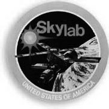
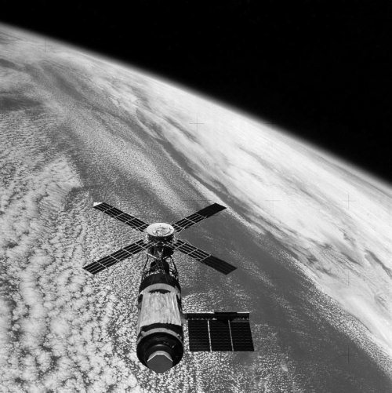
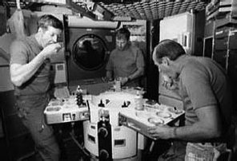
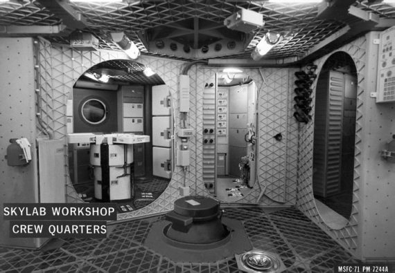

Орбитальная станция «Скайлэб»
Американская орбитальная станция «Скайлэб» (SkyLab – сокращение от Небесная лаборатория) была создана в 1960-х годах на волне всеобщего энтузиазма, связанного с пилотируемыми космическими полетами, особенно с лунными экспедициями «Аполлонов». Специалистам НАСА будущее представлялось эрой расцвета космических исследований. Предполагалось, что освоение космоса станет одной из основных задач в области науки и техники, и что для этого будут выделяться большие финансовые средства. Именно поэтому были начаты серьезные конструкторские проработки больших космических станций, которые, как ожидалось, позволят создать обитаемую научную базу на Луне, а при использовании ядерной энергетической установки даже осуществить полеты человека на Марс.
Но два важных события охладили пыл энтузиастов. Одним из них стала война во Вьетнаме, пожиравшая ежедневно тысячи жизней и миллиарды долларов, и нанесшая серьезный удар по экономике США. А вторым – завершение программы «Аполлон». Как это ни парадоксально звучит, но экономия средств от закрытия лунного проекта не привела к перенацеливанию их на другие разработки. Орбитальная станция «Скайлэб» и космический транспортный корабль многоразового использования «Спейс Шаттл» – вот все, что осталось от первоначально намеченной обширной программы работ в области космических исследований.
Предполагалось, что полет станции «Скайлэб» даст США необходимый опыт эксплуатации большой орбитальной лаборатории. Причем благодаря использованию оставшегося от лунной программы оборудования, этот опыт будет приобретен ценой минимальных финансовых затрат. Так задумывалось. Так не получилось.

Эмблема программы «Скайлэб»
Но программа «Скайлэб» никогда не появилась бы на свет, если бы не запуски орбитальных станций в Советском Союзе. Победив в лунной гонке, американцы стали заметно отставать в создании орбитальных систем. Чтобы восстановить равновесие и в этой области, и было решено в кратчайшие сроки подготовить и запустить обитаемую космическую станцию.
Орбитальный блок станции «Скайлэб» был создан на базе ракеты «Сатурн-4Б» – третьей ступени ракеты-носителя «Сатурн-5». Ее водородный бак был переоборудован в просторное двухэтажное помещение для экипажа из трех человек.
В нижней части станции находился бытовой отсек с помещениями для отдыха, приготовления и приема пищи, сна и личной гигиены. Выше располагался лабораторный отсек, где астронавты работали. Полный внутренний объем орбитальной космической станции «Скайлэб» вместе с пристыкованным к ней модифицированным основным блоком космического корабля «Аполлон» – около 330 кубических метров. Это в три раза больше, чем аналогичные разработки того времени в Советском Союзе.
Вода, пища и одежда в количестве, достаточном для работы трех экипажей по три астронавта, были запасены в специальных контейнерах еще перед стартом. Вода находилась в резервуарах, размещенных в верхней части станции, пища хранилась в шкафах для пищевых продуктов, холодильниках и в морозильных камерах, также размещенных в верхней части станции и в помещениях для отдыха, приготовления и приема пищи.

Орбитальная станция «Скайлэб» на орбите
Снаружи на корпусе станции были смонтированы панели солнечных батарей, которые во время выведения станции на орбиту в сложенном состоянии были прижаты к ее корпусу. С внешней стороны станция была окружена тонким алюминиевым экраном цилиндрической формы, который после выведения на орбиту с помощью специальных рычагов отодвигался от поверхности станции и, находясь от нее на некотором расстоянии, служил для защиты корпуса от ударов микрометеоритов и от воздействия интенсивного солнечного излучения.
В головной части орбитального блока станции были размещены отсек оборудования, шлюзовая камера и причальная конструкция, которая позволяла космическим кораблям «Аполлон» пристыковываться к станции и производить смену экипажей.
Запуск «Скайлэба» состоялся 14 мая 1973 года. В начале полета казалось, что все идет нормально, и лишь после выведения станции на орбиту была обнаружена серьезная неисправность на ее борту. Оказалось, что в течение первых 63 секунд полета скоростным напором воздуха оторвало часть противо-метеоритного экрана и одну из двух панелей солнечных батарей. В результате вырабатываемая батареями электрическая мощность оказалась существенно меньше расчетной, что не позволяло нормально функционировать бортовым системам и научному оборудованию. Кроме того, возникла угроза перегрева станции под действием мощных потоков солнечного излучения.
В какой-то момент в НАСА даже промелькнула крамольная идея: «А не бросить ли всю эту затею со станцией?». Но потом в аэрокосмическом ведомстве все-таки решили, что еще не все потеряно, и стали срочно готовить запчасти для ремонта, который должны были провести члены первого экипажа станции.
Первый экипаж (командир Чарльз Конрад (Charles Conrad), второй пилот Пол Вейц (Paul Weitz), врач-астронавт Джозеф Кервин (Joseph Kerwin)) отправился на борт станции не через пять дней, как это сначала планировалось, а через одиннадцать, 25 мая. Спустя семь с половиной часов после старта они подлетели к «Скайлэбу», совершили инспекционный облет вокруг него и подтвердили, что одна панель солнечной батареи полностью отсутствует, а вторую заклинило куском сорванного противо-метеоритного экрана. Надев скафандры для выхода в открытый космос, астронавты попытались раскрыть заклинившую панель солнечной батареи, для чего командир экипажа Конрад начал проводить маневры отстыкованного от орбитальной станции корабля «Аполлон» на минимально возможном расстоянии от ее поверхности. В это время Вейц, которого подстраховывал Кервин, высунулся из люка, держа в руках специальные закрепленные на длинной ручке ножницы. Несмотря на все героические усилия экипажа, раскрыть заклинившуюся панель им не удалось – она не двигалась.
Бросив это бесполезное занятие, астронавты стали готовиться к переходу на борт станции. На Земле прогнозировали, что экипаж ждет еще одна опасность. Рост температуры внутри станции мог привести к выделению токсичных газов из обшивки. А это, если не позаботиться заранее, могло привести к отравлению и даже гибели астронавтов, поэтому в «Скайлэб» Конрад, Вейц и Кервин переходили, надев респираторы. К счастью, опасения оказались напрасными.
Несмотря на трудности, эксплуатация «Скайлэба» в пилотируемом режиме была начата. Астронавты не только отремонтировали станцию, но и полностью выполнили свою программу работ. Первый экипаж пробыл в космосе 28 дней – рекордный по тем временам срок.
Второй экипаж (командир Алан Бин (Alan Bean), второй пилот Джек Лусма (Jack Lousma), научный работник-астронавт Оуэн Гэрриот (Garriott Owen)) стартовал 28 июля 1973 года. Казалось, что, идя по проторенному коллегами пути, второму экипажу будет легче. Однако после прибытия на станцию выяснилось, что астронавтов там ждет крупная неприятность. В двух из четырех связок вспомогательных двигателей основного блока корабля «Аполлон» была обнаружена утечка горючего, что могло помешать благополучному возвращению астронавтов на Землю. В связи с этим непредвиденным обстоятельством НАСА немедленно стало разрабатывать план отправки на станцию «Скайлэб» экспедиции спасения, на случай, если таковая потребуется. Два астронавта могли на модифицированном основном блоке корабля «Аполлон» отправиться на станцию и забрать оттуда трех астронавтов. К счастью, проводить намеченную на 5 сентября спасательную операцию, в которой должны были участвовать астронавты Вэнс Бранд и Дон Линд, не пришлось – выяснилось, что утечка топлива не столь опасна, как это показалось вначале.
Тем временем работа на борту «Скайлэба» шла своим чередом. Астронавты продолжили начатые Конрадом, Вейцом и Кервином эксперименты по биологии, космической медицине, физике Солнца, астрофизике и наблюдению Земли. 7 августа был совершен выход в открытый космос, во время которого поверх установленного первой экспедицией теплозащитного экрана типа «зонт» был раскрыт новый экран типа «полог». Он должен был обеспечить лучшую изоляцию корпуса станции от солнечного излучения. Астронавты также заменили кассету с пленкой в комплекте астрономических приборов.

Американские астронавты на борту станции ««Скайлэб»
Позднее двум астронавтам вновь пришлось выходить в открытый космос для подключения кабеля, соединяющего блок взятых ими с собой запасных гироскопов с цифровой вычислительной машиной. Эта операция позволила исправить серьезное повреждение, которое было обнаружено в системе ориентации станции. Все эти неполадки не помешали астронавтам полностью выполнить намеченную программу полета. 25 сентября, после 59 суток пребывания в космосе, экипаж второй экспедиции благополучно вернулся на Землю.
Третья, заключительная экспедиция на «Скайлэб» (командир Джеральд Карр (Gerald Carr), второй пилот Уильям Поуг (William Porue) и научный работник-астронавт Эдвард Гибсон (Edward Gibson)) отправилась в космос 16 ноября. Так как планировалось побить рекорд пребывания в космосе, много места в полетном задании было отведено проведению медицинских исследований. Астронавты выполнили массу физических упражнений на имевшемся на станции велоэргометре, занимались бегом на месте. Несмотря на то, что третий экипаж станции провел на ее борту гораздо больше времени, чем предыдущие экипажи (84 дня), после возвращения на Землю Карр, Поуг и Гибсон находились в лучшем физическом состоянии, чем их предшественники, и гораздо быстрее адаптировались к условиям земного тяготения.
Во время этой экспедиции члены экипажа космической станции наблюдали и фотографировали комету Когоутека при ее движении вокруг Солнца. Они сообщили, что свечение кометы, подобно свечению пламени, содержит желтый и оранжевый цвета, но преобладает желтый цвет.

Рабочее помещение станции «Скайлэб»
Другим важным событием было наблюдение за солнечной вспышкой, которую обнаружил один из астронавтов, долгие часы изучавший солнечную корону с помощью комплекта астрономических приборов. Это был первый случай регистрации выброса протуберанца в солнечной короне с самого момента его зарождения при помощи мощных вынесенных в космос оптических приборов. Члены третьего экипажа «Скайлэба» стали первыми землянами, встретившими в космосе наступление нового, 1974-го, года. Это сейчас подобное событие происходит регулярно. А тогда «новогоднему застолью» на орбите было уделено немало внимания.
На этом эксплуатация «Скайлэба» в пилотируемом режиме завершилась, хотя ресурс станции был далеко не исчерпан. Были планы возвращения астронавтов на борт, правда, весьма отдаленные. Полагали, что станция продолжит движение по круговой орбите вокруг Земли до начала 1980 года или дольше. К тому времени должны были начаться полеты кораблей многоразового использования. С помощью одного из шаттлов планировали доставить к «Скайлэбу» небольшое автоматическое устройство – робота-телеоператора, представляющего собой дистанционно управляемый разгонный блок. Экипаж шаттла должен был состыковать робота со станцией и поднять орбиту станции. Или наоборот, управляемо свести ее с орбиты.
Сделать это не успели. Повышение солнечной активности в 1978–1979 годах «столкнуло» «Скайлэб» с орбиты. 11 июля 1979 года станция вошла в земную атмосферу и в ней разрушилась. Несгоревшие обломки упали, по большей части, в Индийский океан, но некоторые фрагменты долетели до Австралии. Довольно много обломков было подобрано на дальней оконечности «зеленого континента», а один большой обломок цилиндрической формы длиной 1,8 метра и диаметром около 0,9 метра и весом в полтонны был найден на ферме около города Роллина. К счастью, падение этого обломка не причинило никакого ущерба ни людям, ни строениям.
Так закончилась история «Скайлэба». После этого американцы два десятилетия не занимались созданием орбитальных станций. И лишь новые политические реалии вернули их к этим работам. Но об этом в одной из следующих глав. А пока хочу вспомнить еще одну страницу из «пост-аполлоновской эпохи».